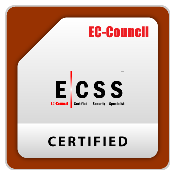

ระบบห้องประชุม สถาปัตยกรรมระบบคอมพิวเตอร์ เครือข่าย และผู้เชี่ยวชาญด้านความมั่นคงปลอดภัยไซเบอร์ระดับสากล
คลิกที่ป้ายการรับรองด้านล่างเพื่อแสดงภาพใบประกาศนียบัตรตัวจริง (Popup)

การันตีทักษะด้านความมั่นคงปลอดภัยสากล การจัดการความเสี่ยง และการป้องกันภัยคุกคามไซเบอร์ระดับองค์กร

รับรองความรู้พื้นฐานและมาตรฐานด้าน Cybersecurity ที่ได้รับการยอมรับในอุตสาหกรรมเทคโนโลยีทั่วโลก

ผู้เชี่ยวชาญด้านความปลอดภัยของข้อมูล เครือข่าย และระบบปฏิบัติการตามกรอบโครงสร้างสากล